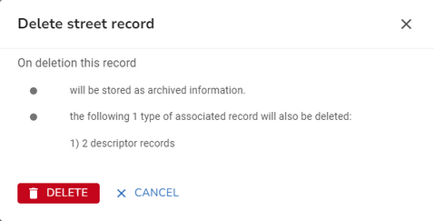

First you need to find the street that you wish to maintain. You can use the Search to search for the street.
Once you have found the street, click on it, either in the search results or Explorer to open the Street form where the street details will be displayed.
Edit a street
You can maintain the Street information on the Street tab of the Street form.
The Street tab allows you to maintain the Street and Street Descriptor details.
For details on editing other street information please select one of the following links.
When you are happy with your changes, click Save.
Notes:
•If there are any validation errors found when you click Save then these must be corrected before the street can be updated. Please see Street Error Handling for more information.
•If you are a Scottish authority there is an option to Add language version of a Street descriptor if you hover over the ENG entry e.g.

•If you are an Administrator then you will see an Edit USRN button which will allow you to manually assign a USRN if required.
Close a street
Note: You will not be allowed to close a street unless there are either no properties associated with it, or if there are they are all Historical. There are several ways to close a street:
•Once you have found your street you have a couple of choices.
1.You can select Close street from the More Actions for the street in the Explorer. or from the Actions on the Street tab and you will be taken to the Street tab with the State set to Permanently closed and the End Date set to today's date.
2.Or you can select the Street tab and manually change the State to Permanently closed. The End Date field is now exposed for you to specify when the street was closed.
•Save your changes.
Delete a street
Note: You will not be allowed to delete a street that has properties associated with it.
•Once you have found your street, you select Delete from the More Actions for the street in the Explorer.
•You will see a confirmation dialog letting you know what will be deleted if you continue e.g.

•Click  to delete the street and any associated records or click CANCEL to return without deleting.
to delete the street and any associated records or click CANCEL to return without deleting.